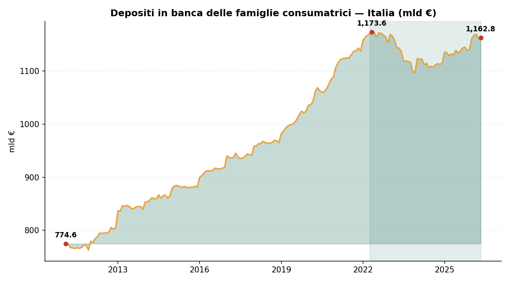
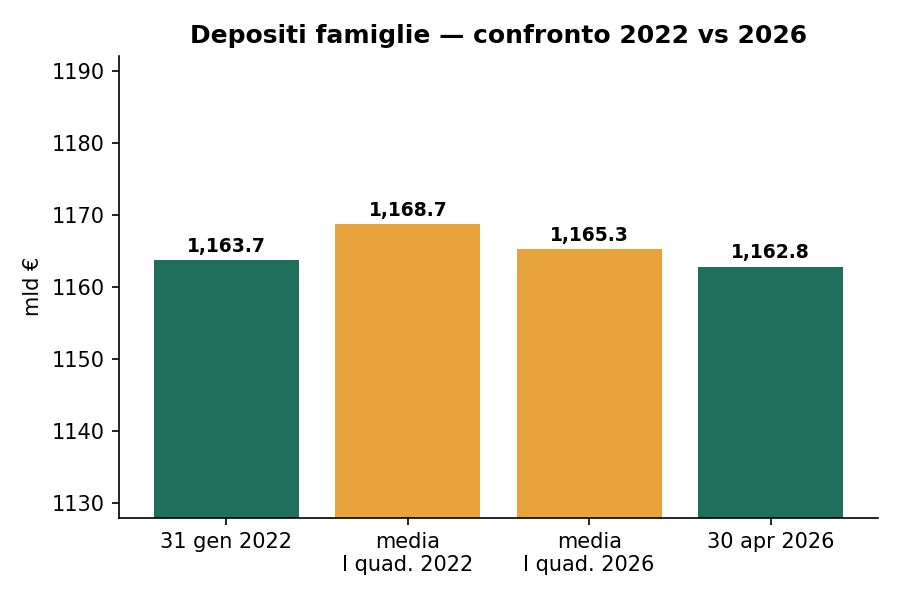
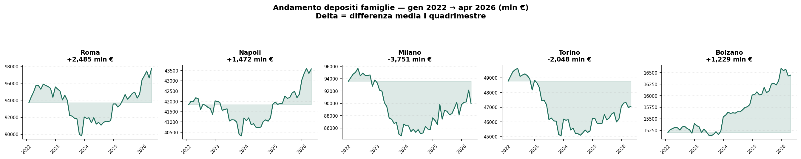
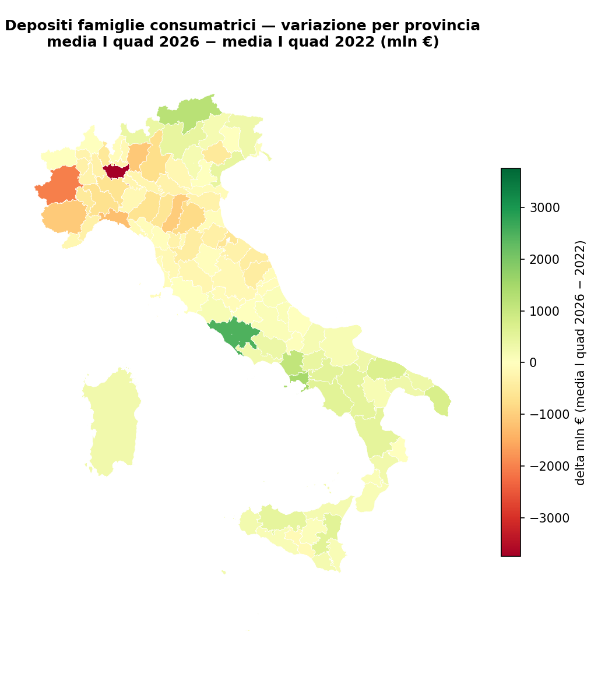

Depositi delle famiglie: che cosa dicono davvero i numeri
Replica e lettura dei dati usati dal Sole 24 Ore sui conti correnti tra 2011 e aprile 2026
Paolo Volterra ![]()
Questo documento rilegge i numeri impiegati dal Sole 24 Ore nell’articolo sui depositi bancari delle famiglie consumatrici del 20 luglio 2026. La replica usa la tavola Banca d’Italia TDB20290, settore Bankit 600 e fenomeno 52000100: la stessa combinazione che restituisce 1.162,8 miliardi di euro ad aprile 2026 e riproduce i valori nazionali e territoriali pubblicati dall’articolo. Il quadro che emerge e’ semplice: i depositi nominali non sono crollati, ma hanno smesso di crescere dopo il picco del 2022; in termini reali, l’inflazione ha eroso una quota rilevante del potere d’acquisto accumulato sui conti.
depositi bancari, famiglie consumatrici, Banca d’Italia, Il Sole 24 Ore, inflazione, risparmio, province, Bankit
1 Sintesi
I numeri usati dall’articolo del Sole 24 Ore [1] si ricostruiscono con una combinazione precisa della base dati Banca d’Italia [2]:
| Campo | Valore usato | Significato operativo |
|---|---|---|
| Tavola | TDB20290 |
Depositi per provincia, settore e sottosettore della clientela |
SET_CTP |
600 |
Famiglie consumatrici secondo la codifica Bankit |
FENEC |
52000100 |
Depositi nella definizione aggiornata della tavola |
| Unita’ | migliaia di euro | /1e6 per ottenere miliardi di euro |
| Delta territoriali | media gennaio-aprile | confronto tra I quadrimestre 2022 e I quadrimestre 2026 |
Questa scelta produce un match sui valori chiave dell’articolo: 774,6 miliardi al 31 gennaio 2011, 1.173,6 miliardi al picco di aprile 2022, 1.168,7 miliardi come media del primo quadrimestre 2022, 1.165,3 miliardi come media del primo quadrimestre 2026 e 1.162,8 miliardi al 30 aprile 2026.
Il punto interpretativo non e’ che i depositi nominali siano evaporati. Il livello di aprile 2026 e’ quasi identico a quello di gennaio 2022: 1.162,8 miliardi contro 1.163,7. Il cambiamento e’ nella loro capacita’ di acquisto: nel periodo di inflazione alta, la stabilita’ nominale equivale a una perdita reale.
2 Il dato nazionale
Dal 2011 al 2022 i depositi delle famiglie consumatrici crescono in modo quasi continuo. La serie parte da 774,6 miliardi a gennaio 2011 e arriva al massimo di 1.173,6 miliardi ad aprile 2022. La crescita incorpora piu’ fasi: ricostruzione del risparmio dopo la crisi finanziaria, accumulo precauzionale durante la pandemia, minore spesa in alcuni mesi del 2020-2021 e preferenza per la liquidita’.
Dopo il picco, pero’, la traiettoria cambia. Non si osserva una caduta drammatica del saldo nominale, ma una lunga fase laterale: il dato di aprile 2026 e’ 1.162,8 miliardi, appena sotto il valore di gennaio 2022. La fotografia e’ quindi diversa da quella che si avrebbe guardando solo ai flussi mensili: la massa di liquidita’ resta elevata, ma non cresce piu’ abbastanza da compensare l’aumento dei prezzi.

Figura 1: Depositi delle famiglie consumatrici, Italia.
La distinzione tra livello nominale e valore reale e’ essenziale. Un conto che mantiene lo stesso saldo in euro per quattro anni non mantiene lo stesso potere d’acquisto se nel frattempo prezzi e costo della vita aumentano. Il titolo dell’articolo del Sole 24 Ore sintetizza questo passaggio: l’inflazione ha bruciato una parte del valore reale dei depositi [1].
3 Perche’ il primo quadrimestre conta
Per confrontare 2022 e 2026 l’articolo non usa un singolo mese isolato, ma la media dei primi quattro mesi dell’anno. Questa scelta riduce il rumore mensile e rende piu’ stabile il confronto territoriale.
La media gennaio-aprile 2022 e’ 1.168,7 miliardi. La media gennaio-aprile 2026 e’ 1.165,3 miliardi. La differenza nominale e’ quindi molto piccola, pari a circa -3,4 miliardi. In percentuale, la variazione e’ quasi nulla. In termini reali, invece, il confronto cambia segno e intensita’: la stessa quantita’ di euro compra meno beni e servizi.

Figura 2: Confronto tra medie del primo quadrimestre 2022 e 2026.
Questo e’ il passaggio che rende interessante la serie. Il deposito bancario e’ una grandezza apparentemente rassicurante perche’ stabile, liquida e visibile. Ma quando i prezzi accelerano, la stabilita’ del saldo puo’ mascherare una perdita. Il dato nominale dice quanta liquidita’ e’ rimasta nei conti; il dato reale dice quanto vale quella liquidita’.
4 Le citta’ non si muovono tutte nello stesso modo
Il confronto tra medie del primo quadrimestre mostra che il saldo nazionale nasconde dinamiche locali diverse. Alcune province aumentano i depositi, altre li riducono. Le cinque citta’ evidenziate dall’articolo danno un’idea della dispersione:
| Provincia | Variazione media I quadr. 2022 -> I quadr. 2026 | Lettura |
|---|---|---|
| Roma | +2.485 milioni | crescita nominale rilevante |
| Napoli | +1.472 milioni | crescita nominale marcata |
| Milano | -3.751 milioni | riduzione forte |
| Torino | -2.048 milioni | riduzione forte |
| Bolzano | +1.229 milioni | crescita elevata rispetto alla dimensione locale |

Figura 3: Cinque province citate dall’articolo.
Questi delta non vanno letti come una classifica meccanica di ricchezza. I depositi provinciali dipendono da popolazione, struttura produttiva, redditi, prezzi delle case, composizione demografica, propensione al risparmio e scelte di portafoglio. Una riduzione dei depositi puo’ indicare consumo, investimento in altri strumenti, erosione da inflazione o riallocazione finanziaria. Un aumento puo’ indicare accumulo di liquidita’, ma anche prudenza o mancato investimento.
Il dato bancario, preso da solo, non spiega il comportamento delle famiglie. Pero’ segnala dove il cambiamento merita di essere indagato.
5 Nord vs Sud
Prima di entrare nel dettaglio provinciale, conviene separare il dato nazionale in due blocchi: Centro-Nord e Mezzogiorno. Questa scomposizione cambia la lettura della quasi stabilita’ italiana. La media nazionale dei primi quattro mesi dell’anno si muove poco, ma sotto la superficie le due macroaree non seguono la stessa direzione.
Nel Centro-Nord i depositi delle famiglie consumatrici scendono da 881,0 miliardi nel primo quadrimestre 2022 a 865,1 miliardi nel primo quadrimestre 2026: -15,8 miliardi, pari a -1,8%. Nel Mezzogiorno, invece, salgono da 287,7 a 295,6 miliardi: +7,9 miliardi, pari a +2,7%. Il saldo nazionale e’ quindi il risultato di due movimenti opposti: riduzione nel Centro-Nord, aumento nel Sud.
| Area | Media I quadr. 2022 | Media I quadr. 2026 | Delta | Var. % |
|---|---|---|---|---|
| Centro-Nord | 881,0 mld | 865,1 mld | -15,8 mld | -1,8% |
| Mezzogiorno | 287,7 mld | 295,6 mld | +7,9 mld | +2,7% |
Questa frattura non va trasformata subito in una graduatoria di benessere. Puo’ dipendere da molte cose: diversa composizione del risparmio, minore spostamento verso fondi e titoli, diversa struttura demografica, dinamiche di reddito, trasferimenti pubblici, prezzi delle case, intensita’ dell’inflazione locale e ruolo della liquidita’ come riserva precauzionale. Pero’ segnala un fatto empirico: nella metrica usata dall’articolo, il Sud non partecipa alla riduzione nominale osservata nel Centro-Nord.
6 Focus Mezzogiorno
Il Mezzogiorno merita una lettura separata perche’ nel confronto 2022-2026 si muove in modo diverso dal Centro-Nord. Usando la stessa metrica dell’articolo, cioe’ la media gennaio-aprile dei depositi delle famiglie consumatrici, le province meridionali passano da 287,7 miliardi nel primo quadrimestre 2022 a 295,6 miliardi nel primo quadrimestre 2026. L’aumento e’ pari a 7,9 miliardi, cioe’ +2,7% in termini nominali.
Il Centro-Nord, nello stesso confronto, scende da 881,0 a 865,1 miliardi: -15,8 miliardi, pari a -1,8%. La differenza e’ importante: la stabilita’ del dato nazionale non nasce da movimenti uniformi, ma dalla compensazione tra aree territoriali. Il Mezzogiorno cresce nominalmente, mentre il Centro-Nord arretra.
Dentro il Mezzogiorno il contributo principale viene dalla Campania, che cresce di 4,1 miliardi. Seguono Puglia (+2,6), Sicilia (+2,0), Calabria (+1,1), Basilicata (+0,7), Abruzzo (+0,3) e Molise (+0,2). La Sardegna e’ l’unica regione meridionale in calo nella ricostruzione meccanica dei dati, ma questo risultato va letto con cautela per il problema gia’ segnalato sulla provincia del Sud Sardegna: nella base finale manca il codice provinciale ITG2H, e quindi l’isola e’ sottostimata.
| Regione | Media I quadr. 2022 | Media I quadr. 2026 | Delta | Var. % |
|---|---|---|---|---|
| Campania | 86,2 mld | 90,3 mld | +4,1 mld | +4,7% |
| Puglia | 59,1 mld | 61,7 mld | +2,6 mld | +4,4% |
| Sicilia | 57,2 mld | 59,2 mld | +2,0 mld | +3,4% |
| Calabria | 24,8 mld | 25,9 mld | +1,1 mld | +4,3% |
| Basilicata | 10,4 mld | 11,1 mld | +0,7 mld | +6,4% |
| Abruzzo | 23,1 mld | 23,5 mld | +0,3 mld | +1,4% |
| Molise | 6,1 mld | 6,3 mld | +0,2 mld | +3,7% |
| Sardegna | 20,7 mld | 17,7 mld | -3,0 mld | -14,6% |
La provincia che pesa di piu’ nel risultato e’ Napoli: da sola aumenta di circa 1,44 miliardi, quasi un quinto della crescita complessiva del Mezzogiorno. Seguono Caserta, Lecce, Bari, Salerno, Catania, Avellino, Cosenza, Potenza, Palermo e Benevento. Il quadro e’ quindi coerente con quanto gia’ emergeva dalle citta’ citate dall’articolo: Napoli non e’ un’anomalia isolata, ma il segnale piu’ visibile di una dinamica meridionale nominalmente positiva.
Questa crescita non va pero’ letta automaticamente come arricchimento. Anche al Sud vale la distinzione centrale del report: depositi nominali piu’ alti non significano necessariamente maggiore potere d’acquisto. L’aumento puo’ riflettere accumulo prudenziale, minore riallocazione verso strumenti finanziari, trasferimenti, redditi nominali, liquidita’ di famiglie e piccole attivita’, oppure differenze nella propensione a mantenere denaro sui conti. In un periodo di inflazione elevata, anche un +2,7% nominale puo’ essere compatibile con una perdita reale.
La lettura piu’ prudente e’ quindi questa: il Mezzogiorno non appare come l’area in cui i depositi si sono contratti; al contrario, tiene e cresce in termini nominali. Ma proprio per questo il dato merita un approfondimento ulteriore, incrociando popolazione, redditi, inflazione territoriale, composizione del risparmio e diversa diffusione di strumenti finanziari alternativi al conto corrente.
7 La mappa provinciale
La mappa dei delta provinciali conferma che il fenomeno non e’ uniforme. La media nazionale e’ quasi ferma, ma il territorio si divide tra aree in aumento e aree in riduzione.

Figura 4: Variazione dei depositi per provincia, media I quadrimestre 2022 contro media I quadrimestre 2026.
La replica dei dati provinciali e’ molto vicina all’articolo: 99 province su 103 combaciano esattamente. La principale anomalia riguarda la Sardegna, dove alla data finale manca nel database il codice provinciale ITG2H per Sud Sardegna. Per questo la Sardegna va trattata come caso speciale e non come errore interpretativo.
8 Il passaggio metodologico decisivo
La parte piu’ delicata della replica non e’ stata il grafico, ma la scelta dei codici. Una soluzione apparentemente naturale, SET_CTP='S14', produce valori troppo alti: circa 1.253 miliardi ad aprile 2026, contro i 1.162,8 miliardi dell’articolo. La differenza e’ nell’ordine di 90 miliardi.
Il codice corretto e’ SET_CTP='600'. In questa tavola Bankit, 600 e’ il settore che corrisponde alle famiglie consumatrici nel perimetro usato dall’articolo. La lezione e’ generale: nei dati Banca d’Italia le etichette economiche non vanno dedotte solo dal significato dei codici SEC; vanno validate sui livelli nazionali e, quando possibile, sui dati sub-nazionali.
La sequenza di controllo e’ stata:
- identificare la tavola sui depositi provinciali;
- confrontare i settori disponibili, in particolare
S14e600; - verificare il valore nazionale al 30 aprile 2026;
- controllare il picco e le medie del primo quadrimestre;
- confrontare i delta delle province e delle citta’ citate nell’articolo.
Solo la combinazione TDB20290 + SET_CTP='600' + FENEC='52000100' riproduce l’intero insieme dei numeri.
9 Che cosa si puo’ concludere
La replica porta a tre conclusioni.
Primo: i depositi delle famiglie restano molto elevati in termini nominali. Il valore di aprile 2026 e’ ancora sopra 1.160 miliardi, cioe’ circa 388 miliardi in piu’ rispetto a gennaio 2011.
Secondo: dopo il massimo del 2022 la crescita si e’ fermata. La distanza tra la media del primo quadrimestre 2022 e quella del primo quadrimestre 2026 e’ minima in euro correnti, ma il contesto dei prezzi rende questa stabilita’ meno rassicurante.
Terzo: il territorio conta. Roma, Napoli e Bolzano aumentano; Milano e Torino scendono. La media nazionale appiattisce movimenti locali che possono avere cause diverse e che richiedono incroci con redditi, popolazione, inflazione locale, mercato immobiliare e composizione degli strumenti finanziari.
La morale operativa e’ che un articolo di giornale puo’ essere replicato solo se si ricostruisce la grammatica del dato sottostante. In questo caso la chiave non era una formula complessa, ma un codice: 600.
Trasparenza sull’uso dell’intelligenza artificiale
Strumenti di intelligenza artificiale generativa sono stati usati come supporto alla riorganizzazione del materiale, alla verifica della coerenza narrativa e alla redazione del testo. Le fonti, le scelte metodologiche, le verifiche sui dati e le conclusioni restano sotto la responsabilita’ dell’autore.